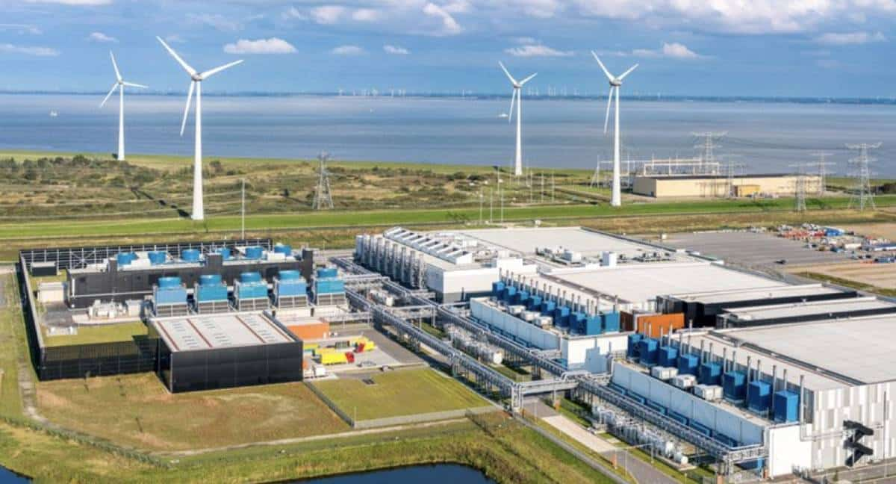

CSR Commitment in the Digital Sector
Corporate Social Responsibility (CSR) plays a central role in the work of a Digital Sciences engineer. As digital transformation, cloud computing, and artificial intelligence drive up computing and bandwidth demands, designing high-performance infrastructures is no longer enough: we must ensure their energy sobriety, resilience, and sustainability right from the architecture phase.
The Green Future of Data Centers
As the nerve centers of cloud computing and networks, data centers face a dual challenge: absorbing the exponential growth of data traffic while drastically reducing their carbon and water footprints. As a Client Solutions Engineer apprentice in network, cloud, and security at Orange Business, I am particularly interested in the technological levers transforming these critical infrastructures toward a sustainable model.
PUE < 1.2
Energy efficiency target for next-generation data centers
100% Renewables
Sourcing via green contracts (PPAs) and low-carbon workload scheduling
Waste Heat
Thermal recovery fed back into district heating networks
Innovative Cooling & Energy Efficiency

Cooling has historically accounted for a major share of a data center's electricity consumption. Next-generation infrastructures replace traditional air conditioning with free cooling (using outside air), direct-to-chip liquid cooling, and immersion cooling. Combined with IoT sensors and AI to adjust airflow in real time, these technologies drive down the PUE (Power Usage Effectiveness) while minimizing water consumption (WUE).
Carbon-Free Energy & Smart Scheduling

The transition to green data centers relies on direct funding of renewable energy through Power Purchase Agreements (PPAs) and strategic siting close to low-carbon power sources. Beyond energy sourcing, carbon-aware computing now enables scheduling non-urgent workloads (backups, AI model training) at times and in regions where the electricity grid has the lowest carbon intensity.
Waste Heat Recovery & Circular Economy
Rather than dissipating thermal energy into the atmosphere, modern data centers are becoming true digital boilers. Waste heat captured from servers directly supplies urban district heating networks, residential buildings, agricultural greenhouses, or municipal swimming pools. At the same time, the circular economy is gaining ground in hardware management: extending server lifespans, refurbishing network equipment, and recycling critical metals.
Cloud & Network Sobriety & GreenOps
A green data center only makes sense if the hosted architectures themselves are eco-designed. The GreenOps approach focuses on optimizing cloud resource allocation (virtualization, containerization, automated shutdown of idle environments) and streamlining network traffic to prevent over-provisioning. Reducing the volume of transferred and stored data directly lowers hardware strain and overall environmental impact.
What Comes Next? My Vision as a Future Engineer
Building on my apprenticeship at Orange Business and my upcoming specialization in cybersecurity and cloud computing, I aim to systematically integrate environmental criteria into my technical architecture decisions. Whether selecting sovereign, low-carbon hosting providers, optimizing network infrastructure energy consumption, or applying digital sobriety principles by design, my goal is to reconcile high availability, security, and environmental responsibility.